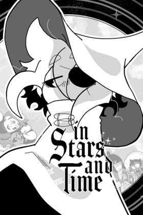

| Quick Facts | |
|---|---|
 | |
| Season: | X |
| Contract: | Arcana Special |
| Contractor: | Frazzle |
| Completed: | Base |
| Format: | Game |
| Developer: | insertdisc5 |
| Date: | 2023 |
| Type: | RPG, Loops |
| Topics: | Life, Happiness, Past |
| Link: | Official Site |
Welcome to my review about In Stars and Time ! This is a very long game, so I couldn't complete it at 100%, but I might play it in a few years to enjoy the story again and complete it. I didn't know this game before, but after looking a bit about it I found that quite a lot of people were real fans of this game, so I played it with quite a hype.
The game itself starts by introducing the player to the characters, and thus explaining the relationships between all of them. Then comes the loops, explaining at the same time that Siffrin is conscious of looping. Quickly the story becomes a maze that has to be explored by the player to go through the game, and I won't spoil it further because trust me, it's the core of the game. I will just say that the few acts that divide the game are all very unique and incredible to discover.
The gameplay is pretty simple, at least the principal combats. Everything is based on rock paper scissors, and makes the basics very easy to understand. However, since there are loops, characters level are linked to a location, apart from Siffrin who remembers his skills. If this is logical, it was often a hassle to plan things ahead, since some skills are necessary and require a certain level. The only drawback is that at the end of the non-story game, it was quite boring to farm sadnesses to level up every time, and a bit difficult to find where to look for clues and progress in the story.
There was also a big big difficulty spike when I had to beat the king for the first time, and I only managed to do so after randomly discovering the bomb. That was quite a frustrating time.
The characters are made to be emotionally bound to the player, they all have their own background, their own past and story, they interact with Siffrin in an adorable way like a family. Again, I won't spoil those beautiful moments of virtual life I had with them, nor the sometimes heartbreaking ones, but trust me this is something.
The developer also made a huge work on the art part, the amount of emotion sprites for each character, plus the few full art, plus the menu... Everything is so cute and well made ! The characters quests arts are insane too.
The music is also pretty nice, every mood and place has its own energy, it's just that after a hundred loops it's comfier in silence, especially that darn village music. I will have it in mind all my life.
I was shocked by the amount of life lessons I took in this game. I more or less played most of the game in a week, and going through it at this pace made me feel so much emotions, I'm confused that no one knows about this game around me. As always, Frazzle has insane recommendations, thank you so much for this one. 9.5/10